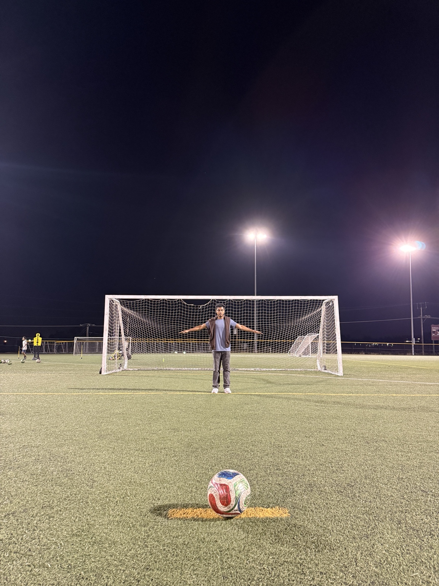
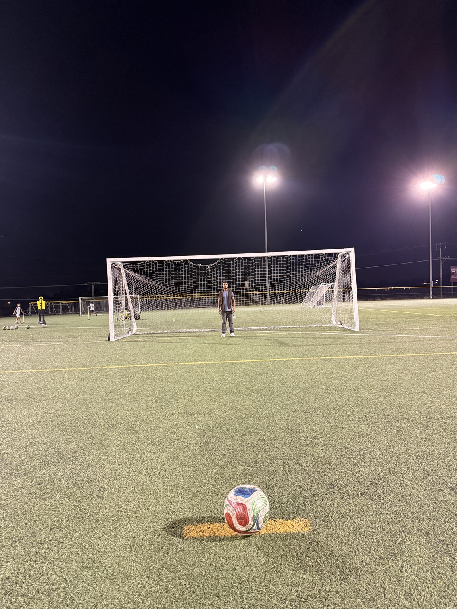

Investigation 3 — Goalkeeper Positioning
A shot is not only about the player and the goal. The goalkeeper also changes the geometry by blocking part of the open view.
My goalkeeper reference photos

Arms extended: this makes the goalkeeper's effective width easier to notice.

Standing position: a second reference for how the keeper appears from the shooter's view.
These photos support the idea of visual coverage. The forward-movement comparison below is still a simplified mathematical model, not a measurement taken directly from these photos.
Visual 1 — Goalkeeper on the goal line
Visual 2 — Goalkeeper moves forward
Simple blocked-angle model
What the symbols mean:
- α = angle blocked by the goalkeeper
- g = effective goalkeeper width or reach
- dg = distance from shooter to goalkeeper
Meaning: when the goalkeeper moves closer to the shooter, dg becomes smaller, so the blocked angle becomes bigger.
Visual 3 — Simple explanation in words
Worked calculation example
This is a simple model to show the idea. I assume the goalkeeper effectively blocks about 1.6 m of width.
Goalkeeper deeper
Goalkeeper moves forward
What changed?
The goalkeeper width stayed the same, but the distance from the shooter to the goalkeeper became smaller. That makes the blocked angle bigger.
Meaning in soccer
When the goalkeeper steps forward, the player sees less open goal around them. So goalkeeper positioning changes the geometry of the shot.
What I learned from this investigation
I first thought my topic was only about the shooter, but this part made me see that the goalkeeper changes the geometry too. A shot can become harder not only because of the player’s position, but also because the goalkeeper reduces the visible opening.